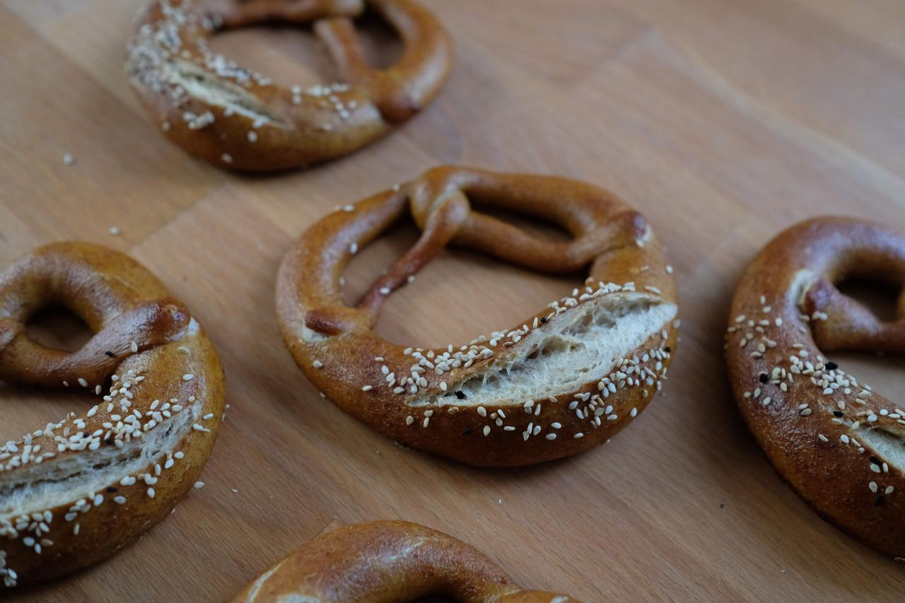
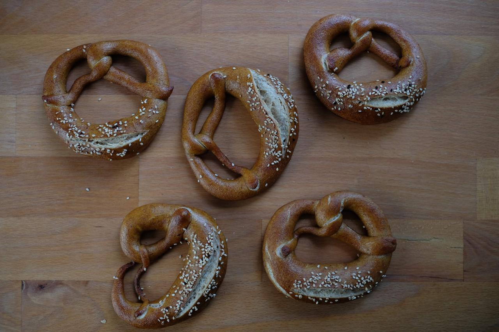

Gesunde Rezepte für Sauerteigbrot und Weiteres
In diesem Rezept zeige ich euch, wie man leckere Brezeln mit Sauerteig backt. Das Rezept ist für 12 Laugenteilchen ausgelegt, die als Brezeln, Brötchen, Stangen oder Bagel geformt werden können. Ich arbeite gerne mit echter Lauge, diese kann man als 4%ige Lösung in Bäckereien oder Apoteken erhalten oder als Laugenperlen im Internet. Im Gegensatz zu Natron schmeckt das Gebäck dann auch wie vom Bäcker.

Morgens
Alle Zutaten für den Sauerteig mischen und bei Raumtemperatur etwa 8-12 Stunden gehen lassen. Wie immer sollte das Anstellgut aktiv, also vorher 2-3 mal gefüttert sein.
Nachmittags
Nach der Gärzeit alle Zutaten für den Hauptteig bis auf die Margarine in einer Küchenmaschine verkneten. Zuerst 50 g Wasser zurückhalten und dieses nach und nach dazugeben, bis ein fester, aber glatter Teig entsteht. Eventuell ist noch mehr Wasser nötig. Nun die Margarine in kleinen Portionen einkneten. Dies dauert nochmal etwa 5 Minuten. Nun den Teig abgedeckt etwa 3,5 Stunden gehen lassen, währenddessen ein- bis zweimal falten.
Abends
Den Teig auf eine Arbeitsfläche geben und in 12 Teile einteilen. Jedes dieser Teile wiegt etwa 100-110 g. Diese zu Zigarren formen und mit einem feuchten Tuch abgedeckt 5 Minuten ruhen lassen. Dies sorgt dafür, dass der Teig gleich einfach zu formen ist.
Nun die Teiglinge zu Brezeln formen. Dafür wird der Teig zuerst zu einer langen dünnen Schnur geformt, die in der Mitte dicker ist als außen. Dann die Enden zweimal überkreuzen und anschließend auf der dicken Mitte andrücken. Alle auf zwei Backbleche setzen und mit feuchten Tüchern abdecken.
Nun die Bleche entweder eine Stunde bei Raumtemperatur oder 8-12 Stunden im Kühlschrank gehen lassen. Danach in beiden Fällen eine halbe Stunde unabgedeckt in den Kühlschrank stellen. Dadurch bildet sich auf den Brezeln eine dünne Haut, die das Laugen vereinfacht und verhindert, dass die Lauge in das Gebäck eindringt.
Am nächsten Morgen (oder am gleichen Abend)
Den Ofen etwa 20 Minuten auf 250 °C aufheizen und währenddessen 500 g Wasser in einer Metallschüssel abwiegen. Vorsichtig mit Schutzbrille und dicken Gummihandschuhen (z.B. saubere Putzhandschuhe) 20 g Laugenperlen in das Wasser einrühren (nicht andersrum!). Nun nach und nach jede Brezel vom ersten Blech etwa 10 Sekunden in die Lösung tauchen, kurz abtropfen lassen und danach wieder auf das Backblech setzen. Mit einem scharfen Messer am Bauch einschneiden und mit Sesam oder grobem Salz bestreuen. Sofort bei 250°C etwa 10-15 Minuten backen, bis sie schön braun sind. Danach mit dem zweiten Blech genauso verfahren. Nach dem Backen mit Wasser absprühen.
